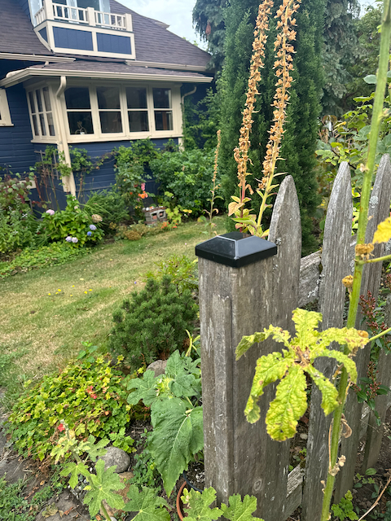

Wild Isle in the City
We took our seats around a large table in a room with a massive 40' x 20' display screen occupying the entire wall at the front of the room. The host asked me to introduce myself, explain my background and interests, when I first entered the meeting: everyone else already knew each other, I was the new guy. In a setting like this, in which I had found myself before, I parade my unconventional career. There is no sense in hiding where I come from.d I explain that I dropped out of college multiple times, spent most of my 20s working as a carpenter - for the poor, for the rich, sometimes self-employed, and finally teaching the trade to young men newly released from the city jail. Then, about to turn 30, I went back to school, got a bachelor's degree in math with the aim to write software in support of research. I add that I had hoped from the beginning to work in biology and medicine - which became possible with the genomics revolution in the late 1990s. I sometimes add that the craft of writing software is not unlike carpentry: one designs, one builds, useful artifacts - sometimes beautiful - are the result.
My unconventional history was well received. This is, in no small part, or so it seems to me, because many an acdemic scientist harbors fond and romantic notions of working in wood. These notions, I hear, are especially likely when said scientist faces an endless run of committee meetings, grant applications, and department politics. Daydreams of fine tools and good wood, of finishing a days work having created something tangible, maybe something beautiful, a shed, a chest, a house. So starting out, at this meeting, I had some positive feelings from this group, despite my unconventional background, lack of an advanced degree, despite not being (as I like to say) a real biologist.
When it was my turn to present - some tentative findings, as I recall, on aberrant gene regulatory networks in Alzheimer's Disease - I was still apprehensive. I am a lifelong stutterer. Ny disfluency, my blocked speech, is intermittent, a lot less in recent years than during tortuous childhood. So sometimes I am entirely fluent, while at other times I am painfully blocked and in obvious face-contorted distress, just trying to get the words out. The present circumstance - giving a talk to experts when my own expertise is limited - this is exactly the circumstance in which anxiety and uncertainty make disfluency more likely. Furthermore, once a stuttering block occurs, my anxiety goes up, and subsequent blocks then become all the more likely. It can be quite a mess.
So I walked with some trepidateion to the front of the room, took my place at the podium, launched my slides, then turned to the audience to explain all this. I said, "I stutter. You will likely see me struggle at times in this presentation. But I'll get throught it - WE will get through it. I ask your patience when it needed."
By starting this way I prepared my audience for what lay ahead. But equally, maybe more important, I freed myself from the ever-present ambition to avoid stuttering. I had set a low bar by confessing my likely difficulties in advance. I may have recruited some some sympathetic allies in the audience. By the time I started into my talk, I had given up all of these things: my temptation to pretend that I am a normal speaker, of being credentialed biologist and a well-known researcher. I was just a regular guy, with an intermittent handicap, candid and hoping to do a good enough job. I then described some of our interesting gene reulation results. I received and answered some good questions. I had a few minor disfluencies along the way, none of which snowballed into an inability to get the words out. I learned that day what can be the benefits of admitting to one's modest standing in the world.
Turning to the present moment, and to the current ssay: I need to do the same thig. I do not have professional - but instead only amateur - status in the disciplines I will employ here. Natural history, molecular biology, forest ecology, plant physiology, forest stewardship: I am an amateur in all of these things.
Furthermore, I also have no training in what might be my central concern, a discipline recently emerged, environmental phenomenology. I think of this as the exploration of the ways our physical, directly-experienced surroundings combine with philosophical or religious committments - conscious or otherwise - to produce a world experience, a world view.
Regarding "world view". Most of us are seldom aware that we speak with an accent: we only notice other speakers' accents. Similarly, most of us are unaware most of the time that we THINK with an accent. That mental accent is our world view, and despite the variety we encounter all around us, and all the political and cultural conflicts that result, I suggest that there is an underlying sameness to them, mostly unrecognized - and ready to be put in question - bold claim! - by visits to a neighborhood old-growth forest.
Let me begin.
------

Once, in this region - the Puget lowlands - there were a million acres of such forest. Only 1000 acres remain. Of those, 120 are found right here, just down the hill on the peninsula, in the middle of a thriving Pacific Rim metropolis. Wild forest is not just for the hinterlands.
My 15-minute walk to the forest proceeds down staight streets, paved roads and sidewalks, right-angled intersections, power lines stretched between poles: everything is lines, corners and flat surfaces. Everything I see is built, engineered, managed. Even the trees and garden plants, some very beautiful, and beautifully arragned, are there only as a result of human choice and action.
All of this, as I will argue, conveys and instills an unspoken but pervasive message, an implicit world view: that we humans are the crucial actors, the indispensable architects, the actual creators of the world. Plants and other animals have some status, but it is subordinate to us, and they are present only on our sufferance.
By contrast: stepping into the forest, I encounter a jumble of green, leaf and branch - or rather: on first encounter it SEEMS to be a disordered jumble.
But with years of walking and looking another perspective and understanding emerges. That cedar branch there, up in the canopy? And that big leaf maple branch nearby? They both seem to be headed for the same opening, the same shaft of sunlight. Yet they did not collide. They curve and reach in apparent recognition of each other, and with apparent respect for each other. "recognition" and "respect" - here, you might suggest, are anthropomorphisms for sure. Plant intelligence - less contoversially called "plant signaling and behavior" - is increasingly reproted, documented and studied in recent years. There is a famous time-lapse youtube video of a vine swinging in circles looking for, and finding a purchase on a support. Suzanne Simard is well-known for her claims, indeed her evidence for, plant inter-species symbiosis.
We read or see these reports at second hand - or perhaps even less directly. We cannot see Simard's mycorrhizal networks. We cannot stand stock still and attentive long enough to witness a vine's pattern of search. And since the our experience is mediated, via text or video, our experience is not likely to be felt - not felt with the immediacy of the urban environment, the straight lines, flat surfaces, and right angles of the built environment. So these accounts of plant perception and plant behavior do not disturb our underlying felt experience that, for most of us, most of the time, we live in an engineered world of human agency.
Now step into the old-growth forest. Study existing branching patterns - pick one that catches your eye. Notice that collisions between branches and leaves are rare. It takes then but a small imaginative stpe to see and feel branching as a dynamic process. First find, on a big leaf maple tree trunk, where a long branch emerges. Trace that branch's trajectory out to its furthest, smallest tips. With a bit of luck, maybe a bit of practice, you can by imagination see that current physical trajectory as the path the branch took over time. It positioned and placed its light-collecting leaves in optimal sunlight - but all the while avoiding conflict with its neighbors. Look for - I suggest you will easily find - evidence of the non-agression pact to which these neighboring trees subscribe. As this community of light-seeking plants grows together, they reach for sunlight, the most beautiful, the most elegant arabesques of leaf and branch emerge. There are no straight lines, no human agency. Instead, only robust, intricate and sustainable structures.
This is what an old-growth Pacific Northest forest puts on display. Here you can see plant perception and behavior in action - spinning out acres and volumes of exquisite beauty, easily observed. And, as I shall argue later in detail, that just as the when we spend our time only in human engineered environments, which elicit a view of the world; so does time spent, and understanding gained, in an old mature forest elicit another view of the world. One where, no doubt, competition between individual plants and animals plays a role, but where non-agression and symbioses - mutual aid - also plays an important role.
In the final paragraph of The Origin of Species, Darwin speaks of
"endless forms most beautiful and most wonderful have been, and are being evolved".
That, however, is not the half of it. This old-growth forest, just down the hill, not tucked away in the hinterlands, often just for the privileged, in a distant preserve or national park, requiring automobile travel, a budget, and vacation time - no, right here in this place, cheek by jowl with our busy urban lives, we see also that
"endless RELATIONS most beautiful and most wonderful have been, and are being evolved".